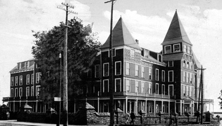

Home • Hydroelectric Power • Pulp & Paper • Transportation • Mining • Forestry • Algoma Steel • Algoma Tubes
Transportation
Algoma Commercial Company Limited
|
Algoma Commercial Company Limited |
The Algoma Commercial Company Limited was incorporated pursuant to the laws of Ontario on 27 December 1899. The objectives of the Company as outlined in the Letters Patent were to build and equip railways, to acquire mining and timber lands, to manufacture raw materials and to operate mines. These very broad objectives went so far as to allow the Algoma Commercial Company Limited the unrestricted right to hold shares in other companies. Clergue’s reasons for forming the Commercial Company were not reduced to writing. Actions speak louder than words, however, and Clergue’s actions immediately following the formation of the Commercial Company leave little doubt as to his intentions. Within months of its own formation, the Commercial Company paid to incorporate the Ontario Lake Superior Company in early 1900. No sooner was the Ontario Lake Superior Company incorporated than it undertook a series of complex paper transactions. As a result of these transactions, control of the Algoma Central Railroad, the Algoma Commercial Company as well as a number of smaller companies was vested in the Ontario Lake Superior Company. First the Commercial Company exercised its right to acquire shares in other companies and purchased shares in both the Ontario Lake Superior Company and in the Algoma Central Railroad. Once these purchases had been completed, the Commercial Company entered into a contract with the Algoma Central whereby it undertook to build the railway lines, the telegraph and telephone lines, the railway terminals, the ore docks and all other facilities required to equip the railway. The Algoma Commercial Company also assumed all of the millions of dollars in construction expenses incurred by the Algoma Central up until the date the contract was executed – 1 February 1900. The Algoma Central, in order to fulfill its contractual obligations, increased its capitalization and transferred all of its shares as well as all of the land grants and cash subsidies it would receive from the provincial and dominion governments to the Commercial Company. The final stage of this share flip was the most complicated but perhaps the most interesting. The Commercial Company sold $3,000,000 of its own shares as well as $3,000,000 worth of shares that it held in the Algoma Central to the Ontario Lake Superior Company. Using this $6,000,000, the Board of Directors of the Ontario Lake Superior Company, through its president Edward Douglas, subscribed for $6,000,000 worth of shares in the Ontario Lake Superior Company. This paper manipulation of the shares in the companies made it appear to the shareholders and to outsiders (specifically banks) that $12,000,000 worth of shares had been sold for cash when in point of fact no monies changed hands. The end result of all of these contracts, trades and sales was that the Ontario Lake Superior Company owned all of the shares in both the Algoma Commercial Company and the Algoma Central and the Algoma Commercial Company owned all of the shares in the Ontario Lake Superior Company. Clergue, Douglas and their colleagues acquired all of the voting shares in the Ontario Lake Superior Company and through the Ontario Lake Superior Company controlled both the Commercial Company and the Algoma Central. The Commercial Company engaged the Provident Life and Trust Company of Philadelphia to sell the preferred stock in the Companies in order to finance their operations. Next to railroads, mines were the most important undertakings of the Algoma Commercial Company. One of the first properties owned by the Commercial Company was the Josephine Mine, a high grade Bessemer quality iron ore site some ten miles north of the Helen Mine site at Michipicoten. Despite the fact that by 1901 a 150-foot shaft had been sunk, the railway line extended to the site and the acquisition of mining machinery, 1903 came and went without any ore being shipped from the mine. In addition to the Josephine Mine, the Algoma Commercial Company owned several other iron ore sites at Michipicoten including the Frances, Goudreau Lake and McDougall sites which were prospects but which had not been developed and the Helen Mine which it acquired through a paper transfer. Through the Algoma Iron Mining Company, a wholly owned subsidiary of the Commercial Company, the Algoma Commercial Company owned the Woodbridge Mine in Minnesota. In addition to the iron ore sites, the Commercial Company also owned gold and nickel properties. The Emily Mine at Missinabi and the Grace Mine at Michipicoten were the most important gold sites. The Grace Mine operated from July of 1901 until the end of 1903 generating profits between $1,500 and $1,800 per month. The Grace was sold to the Lake Superior Corporation in 1908 for approximately $70,000 (despite the limited extent of the lode) and then sold again in 1910 to the LaPage Gold Mining Company. The nickel properties included the Victor Mine (which was acquired in 1902) and the Snyder claims. Both were drilled but not developed. They were sold in 1912. The contract between the Algoma Central and the Commercial Company enabled the Commercial Company to acquire the land grants made to the Algoma Central by the provincial government. By 1901, the Commercial Company had control of more than 1,850,000 acres of land. One of the conditions attached to the land grant was that the grantee had to bring in a certain number of settlers each year. Since the Commercial Company was entrusted with the land, it also assumed the responsibility for settling it. Although Clergue succeeded in attracting some settlers, he did not achieve the levels of success he sought. For example, in 1902, he planned to bring in 500 Finnish families, to grant each of these families 160 acres of land and to guarantee the head of the household employment for at least one year. Another plan outlined efforts to hire 2,000 men in Norway to work on the railroad. Neither of these plans gained anything more than moderate success. Transfer of the timber lands meant that the Commercial Company was also responsible for the woods operations of the Clergue industries. Ironically, one of the early steps taken by the Commercial Company in this field was the establishment of a sawmill at Goulais River, just north of Sault Ste. Marie. In addition to a sawmill with a capacity to produce 35,000 board feet of lumber per day, the Commercial Company also constructed a shingle and lathe mill. Despite the fact that it was reported that a "substantial town" was growing up around the mill, the operation remained open for only one year. By 1903 the operators of the mill realized that there was no place in the Goulais River to hold the logs. Given this critical lack of holding space, the mill was closed. In the interim, the International Lumber Company, another subsidiary of the Commercial Company, had constructed a second sawmill just west of Algoma Steel. Other interests initiated by the Commercial Company included a veneer mill, a brick manufacturing plant, a car shop for the repair and construction of railway cars, real estate speculation at Searchmont (where the Commercial Company was attempting to promote the development of a town), and hotels including the Tagona Inn and the International Hotel at Sault Ste. Marie and the Algoma Inn at Michipicoten.  Following the procurement of the loan from Speyer and Company of New York in 1902, several members of the original board of directors were forced to resign and a committee was established to reorganize the existing corporate structure. As a result of the restructuring, the Ontario Lake Superior Company lost its shares in the Algoma Commercial Company. The Commercial Company became a wholly owned subsidiary of the Consolidated Lake Superior Company. The Commercial Company survived the collapse of the Consolidated in 1903 and continued to operate as a subsidiary of the new Lake Superior Corporation. The mining and lumbering operations conducted by the Commercial operated profitably. The woods operations, however, consistently carried on business at a loss. Although the Commercial Company continued to exist – at least on paper – until 1910, its holdings had diminished throughout the years. It was nothing more than an empty shell when it finally vanished from the local industrial scene. |